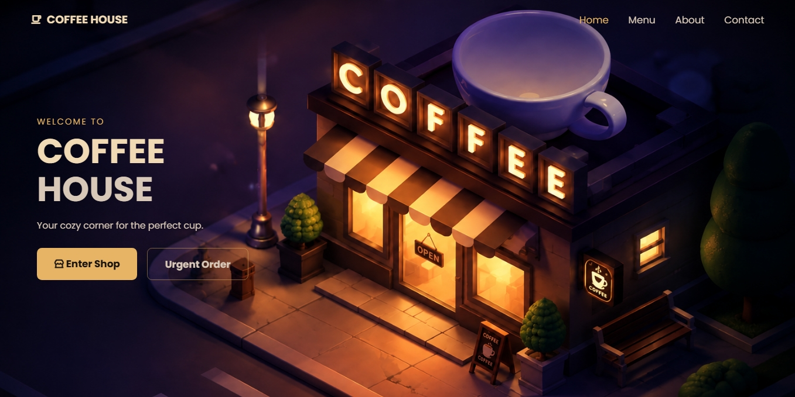

01
COFFEE HOUSE
Interactive Ordering Experience
THE PROBLEM
Most café websites only show a static menu — no interaction, no personality, no reason for a visitor to stay.
THE SOLUTION
A multi-page ordering system with a live Coffee Builder, a cinematic landing sequence, and a Dine-In flow with interactive table selection — built as one connected experience instead of a single static page.
THE SYSTEM
HTML · CSS · JavaScript